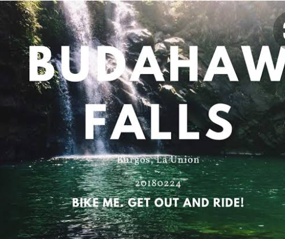

BAUANG TOURIST ATTRACTIONS
CIANO UMOK ART GALLERY
It houses different arts of La union and Baguio City artists on painting and sculptor. "Umok" is an Ilocano term which means bird's nest. Cesar, the owner of the Art Gallery related that when he was a young boy, he loved going to the mountains to look for "umok". When he found these umok, he loved looking what were inside the umok. Finding some birds or eggs, he returned them just the same to the trees where he got them. Ciano was the name of his grandfather. He was popular among the barangay folks because he was a good cook. Cesar looked exactly like his grandfather. He always heard comments from the local folks that he was like "Ciano". He named his art gallery in honor of his late grandfather. Umok serves as a nest for local artists to bond together.
MT. PURAW (MT. KABUGBUGAN)
Climb the highest mountain peak in Bauang and have a rendezvous with sister moon. Enjoy the magnificent view of the Lingayen Gulf and the spectacular view of the rising sun and the sunset. Located in 3 barangays: Barangay Palugsi-Limmansangan, Cabalayangan, St. Monica. It is a 251 meters above sea level with a 228 meters of elevation within a 4 km distance starting from the arch of Brgy. Guerrero in the National Highway.
BAUANG BEACHES
Bauang dubbed as the Beach Capital of the North because of its long stretched of fine sand beaches from Barangay Paringao, Baccuit Norte, Baccuit Sur, Taberna and Pugo that offers around-the-clock excitement and activities. That is why many tourists flocked together here and enjoy swimming especially when summer comes. You can stay in hotels and resorts near the beaches.
ST. PETER AND PAUL PARISH CHURCH AND THE SAN PEDRO BELL

The very antique church of Bauang, St. Peter and Paul Church, founded by the Augustinian friars in 1850 is one of the oldest churches in the Philippines. Many couples choose to have their marriage solemnized in this church because it has the longfest aisle in La Anion with a measurement of 53.43 meters in length and 1.6 meters in width and the bride and groom with their entourage enjoy marching along the aisle. The 400 year old San Pedro bell which stayed in New York City for the last 115 years was returned to its rightful place last May 23, 2016. It is now displayed in front of the Sts. Peter and Paul church and tourist enjoy taking their pictures with the San Pedro Bell. History proved that this bell was originally presented to Friar Mariano Garcia on behalf of Sts. Peter and Paul in 1883 by Gobernadorcillo Mariano Balancio and Lt. Col. Hilario Calica. A concelebrated thanksgiving mass led by Bishop Rodolfo Beltran was held after which the historical bell was jointly rung by Major Dennis Wright and Mayor Eulogio Clarence Martin de Guzman III to announce the lasting freindship between the Americans and the Filipinos.
BAUANG BAKAWAN ECO TOURISM PARK
An eco-tourism mangrove park situated on 49.8 hectares of land covered with different species of mangrove at Barangay Pudoc, Parian Oeste and some part of Payocpoc.
ACTIVITIES: Boating, Eco-trail, Educational Tour, Bird watching, Fishing and Kayaking.
BURGOS TOURIST ATTRACTIONS
OUR LADY OF FATIMA PARISH CHURCH
A Catholic Church servicing the people of Burgos and nearby municipalities.
BUDAHAW FALLS
The Budahaw Falls is located between the municipalitiess of Sablan and Burgos. Sablan being in the province of Benguet and Burgos in the province of La Union. (The falls must be in the territorial jurisdiction of the Municipality of Sablan in Benguet province). It can be reached from Sablan through Barangay Pappa by a hardy hiker but it is more accesible from the town of Burgos, La Union. The waterfalls is made up of 3 layers, each with its pool area. The one above has the smallest drop while the second one is the main cascade and regarded as the Budahaw Falls.
IMELDA LAKE
A mysterious lake that its water is produced by an underground spring.
BOLIKEWKEW RICE TERRACES
Bolikewkew Rice Terraces is recognized to be the greatest identify of the 2000 year old historical "Hagdan Hagdan Palayan of Banaue.